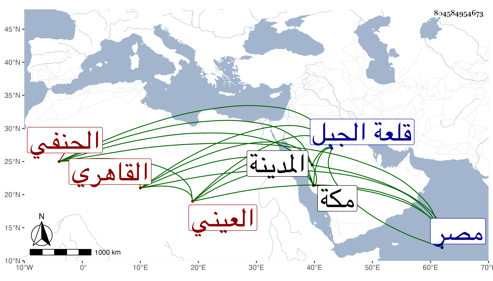

0902Sakhawi.DawLamic.ITO20230111-ara1.EIS1600.804584954673
Biography ID: 804584954673
أحمد بن عبد الرحيم بن محمود بن أحمد الشهاب بن الزين بن شيخنا البدر العيني الأصل القاهري الحنفي . ولد في حدود سنة خمسين وثمانمائة ونشأ في حياة أبيه عند الأمير خشقدم لكونه ابن ربيبته فرباه واستمر معه حتى تسلطن فأنعم عليه بإمرة عشرة ثم بعدة إقطاعات وسكن قلعة الجبل كعادة بني الملوك وصار يخاطب بسيدي ويكتب له المقام الشهابي سبط المقام شريف ولا زال يرقيه حتى صيره من مقدمي الألوف بالديار المصرية فزادت حرمته وعظمته وصارت الأمور غالبا لا تصدر إلا عنه في الولايات والعزل ونحو ذلك مع لطف وصوت طري بالقراءة ونحوها وتقريب اللطفاء وذوق جيد وعقل رصين وفهم متين ولم يغير مع ارتفاعه طباعه في البشاشة والتواضع والإحسان للواردين عليه بل سار على سيرة أكابر الملوك في الإنعام والمماليك خصوصا لما سافر مع جدته خوند الكبرى أمير الحاج سنة ثمان وستين فإنه فعل من المعروف والإحسان شيئا كثيرا وعقد عنده مجلس الحديث في الأشهر الثلاثة فما تخلف كبير أحد عن حضور مجلسه ابتداء ومخطوبا راغبا أو راهبا وصار يعطيهم الصرر عند الختم والخلع وغير ذلك وكنت ممن خطب لذلك وجاءني قاصده مرة أخرى فما انشرح الخاطر لتغيير مألوفي ، بل وعمل مدرسة جده تداريس وتصوفا ونحو ذلك وكان من جملة المقررين هناك الشمني والأقصرائي والحصني والعبادي وخلق وكان ينزل في مجلسه كل أحد منزلته بحيث أن العبادي رام الجلوس فوق الشمني فأخذه بيده وحوله إلى الجهة الأخرى وكذا لما امتنع التقي القلقشندي من تمكين خطيب مكة أبي الفضل النويري من الجلوس فوقه زبره أعظم زبر بحيث فات المجلس وآخر أمره في أيام الظاهر كونه أمير أخور ثم في أيام الظاهر تمربغا ارتقى لأمرة مجلس ولم يلبث أن زال ذلك كله أول استقرار الأشرف وصودر على أموال كثيرة تفوق الوصف وأهين مرة بعد أخرى ثم انصلح أمره مع السلطان بحيث أنه أمده في ختان بنيه ببعض ما أخذ منه وكان مهما حافلا وأسعفه بما يرتفق به في عمارة بيت جده المجاور لمدرسته بل عزل الشافعي والمالكي لتوقفهما في ثبوت التزام من بعضهم له في تلك الأيام كما شرحته في الحوادث وكل هذا بحسن نيته وكرم أصله وبنيته ولذا تزايد إقبال السلطان عليه بحيث صار يتكلم معه في كثير من المآرب فتقضي وشرع في سنة إحدى وتسعين في تكملة عمارته تجاه مدرسة جده لتكون سكنا لولده محمد عند اتصاله بابنة الأمير لاشين أمير مجلس كان في بيت هائل بالأزبكية وصار بابه محط رحال المستغيثين من القاطنين والوافدين ثم انجمع عن ذلك بعد تلافيه لما كان قرر مع الملك في شأنه بحيث تكلف شيئا كثيرا واستمر على وجاهته ثم جاور بمكة واستبدل المدرسة المجاهدية ثم قائمه عظيم وهدم ما تحتها من الدكك في المسجد وبرز في الشارع الأعظم بروزا فاحشا ، وارتحل إلى المدينة الشريفة سنة ثمان وتسعمائة وتوفي ابن النحاس في ذي الحجة ودفن بقبة سيدنا الحسن والعباس والله يجازيه على أفعاله .
